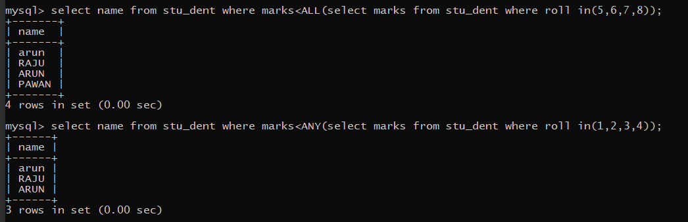

SPECIAL operator in SUB-QUERY
In SQL, there are some special operators used in subqueries to perform specific tasks
These operators are:
(I) EXISTS
(II) ANY
(III) ALL
(I) EXISTS
This operator is used to check for the existence of values. It produces a BOOLEAN result (TRUE / FALSE). It takes a subquery as an argument and evaluates it to TRUE if the subquery produces any output and FALSE, if the subquery does not produce any output.
(II) ANY
The ANY operator compares the lowest value from the set.
(II) ALL
The ALL operator compares the highest value from the set.
Example:-
